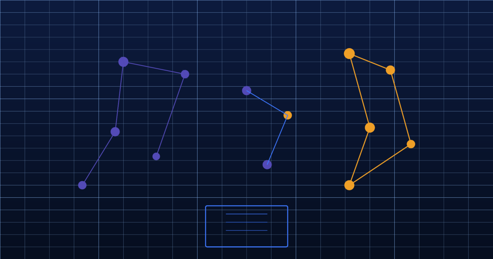

Published 5 February 2026 · 7 min read

CACI's Acorn classification has been a fixture of UK marketing for decades. Walk into any CRM team, any direct mail house, or any financial services analytics function and you will find Acorn codes embedded in their customer data. It is the lingua franca of geodemographic targeting — and that familiarity has become one of the UK data industry's most expensive blind spots.
The problem is structural. Acorn, like all geodemographic classifications derived from the decennial census, is anchored to a point-in-time snapshot of population characteristics. The most recent major rebuild was anchored to the 2011 census. Even with supplemental commercial data layered on top, the foundational classification schema — the one that determines which "type" of consumer lives in a given postcode — reflects a Britain that is now fifteen years in the past.
In 2011, interest rates were at a historic low following the financial crisis but had not yet been tested by sustained inflationary pressure. The cost-of-living crisis that would reshape household finances across the income spectrum was a decade away. Gig economy employment was a curiosity rather than a defining feature of working-age demographics. EPC ratings were not a mainstream consideration for property value. The phrase "banking desert" was not in common usage.
None of that context appears in an Acorn classification. A postcode classified as "Affluent Achievers" in the Acorn schema reflects the characteristics of households that lived there in 2011 — not the households that live there today, under materially different economic conditions. The postcode may have experienced significant property turnover, demographic change, or financial stress since the classification was assigned.
For a retailer making promotional targeting decisions, the difference may be marginal. But for a financial services firm assessing mortgage risk, an insurer pricing home cover, or a telecoms company modelling churn propensity, operating from a fifteen-year-old picture of socioeconomic reality is a genuine business risk — one that is rarely named as such, because it is so deeply embedded in standard practice.
The 2021 census has now been published, and CACI and other geodemographic providers are in the process of incorporating that data. This is a genuine improvement, and it will produce more accurate classifications than what existed before. But it does not fundamentally change the model. By the time the 2021 data has been processed, validated, licensed, and integrated into commercial products, the market will be operating from data that reflects a population snapshot taken four or five years ago.
More importantly, the 2021 census was conducted during an unusual moment — during the tail end of a pandemic that temporarily suppressed mobility, altered household composition patterns, and shifted employment in ways that were partially but not wholly reversed in the following years. Any classification built on that snapshot carries noise from a period of extreme structural disruption.
The deeper issue is that census-anchored classification is inherently retrospective. It can never tell you what is happening now, because census data collection and processing lag the present by years. The question is not whether CACI's next Acorn release will be better than the last — it will be. The question is whether "better than before" is good enough when the alternative is continuous AI refresh.
How far has your data drifted?
Compare your Acorn-derived segmentation against Cogstrata's continuously refreshed attributes. Free sample, results in 24 hours.
Cogstrata does not build classifications on census snapshots. Instead, our models continuously ingest and process real-world event streams: Land Registry transaction data, EPC certificate issuance, insolvency filing rates, claimant count data from HMRC, retail opening and closure patterns, fuel and energy price movements, regional CPI variance, and local news sentiment signals.
These are not supplementary data sources layered on top of a census backbone. They are the primary inputs to our postcode-level models, processed and updated on a continuous cycle. When a wave of mortgage stress begins to affect a particular postcode cluster, Cogstrata's models detect the signal — in shifts in insolvency filing rates, claimant counts, and transaction volumes — and update the relevant attributes before that stress has manifested as the kind of observable behaviour that census-derived models would eventually pick up.
For a financial services team, this means their customer intelligence reflects current financial vulnerability, not a profile of what their customers looked like before the cost-of-living crisis. For a retail team, it means campaign targeting reflects current discretionary spend capacity rather than income bands estimated from a pre-pandemic employment landscape.
We are sometimes asked whether switching from Acorn to a continuously-refreshed data stack requires ripping out existing infrastructure. It does not. Cogstrata is designed to augment existing customer data rather than replace the classification layer wholesale. Teams that have Acorn codes embedded in their CRM can layer Cogstrata's real-time attributes alongside their existing segmentation, using the enriched attributes for campaign decisioning, risk modelling, and churn prediction without requiring a full classification rebuild.
The practical starting point for most teams is a data sample run — taking a subset of their existing customer postcodes and running them through Cogstrata's attribute set to compare the current picture against the Acorn-derived view. In most cases, the divergence is significant enough to make the business case for continuous refresh on its own terms.
CACI built something genuinely useful in Acorn, and it served the UK market well for a long time. But geodemographic classification built on decennial census data is a product of its era — an era when continuous real-world data processing was not technically or commercially feasible. That constraint no longer exists. The question now is not whether continuous refresh is better than a census snapshot. It is whether your organisation is still paying for a product designed around the limitations of 2011.
See the difference for yourself
Run a free Cogstrata sample against your existing customer postcodes and compare the current picture against your Acorn-derived view. Results in 24 hours, no contract required.
Request a Free SampleAI Agent Ready
Demographic intelligence structured for AI agents and human teams alike. API-first, always fresh, privacy-safe.
Enriched results on your own data within 24 hours.